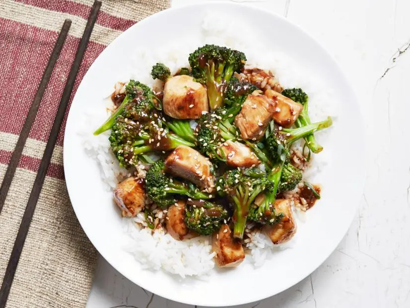

Simple Stirfry

A stirfry with chicken and broccoli
This stirfry comes together quickly and uses just a few ingredients. Perfect for feeding the family after a busy day!
Ingredients
- Instant noodles
- 2 Chicken breasts
- Cashews, 100 grams
- Olive oil, 1 tbsp
- Black bean sauce, 2 tbsp
- Red wine vinegar, 1 tbsp
Steps
- Put the cashews in your frying pan over low heat.
- Start boiling a pot of water to cook the noodles.
- Take a knife and score the chicken breast lengthwise. Mix in a bowl with 1 tbsp each of the oil, vinegar, and black bean sauce.
- Remove the cashews from the frying pan. Put some oil in the pan and fry the chicken on high heat. Turn the chicken after a few minutes so it cooks all the way through.
- While the chicken is cooking, chop the broccoli into bite-size pieces.
- Reserve a few cashews for garnish. Crush the rest.
- Once the water comes to a boil, add the instant noodles. Wait about one minute and add the broccoli to the pot.
- Remove the cooked chicken from the frying pan and slice it.
- Mix the noodles, broccoli, and crushed cashews in the frying pan over low heat. Add another tablespoon of black bean sauce.
- Once fully mixed, serve the stirfry. Add the chicken and whole cashews on top.